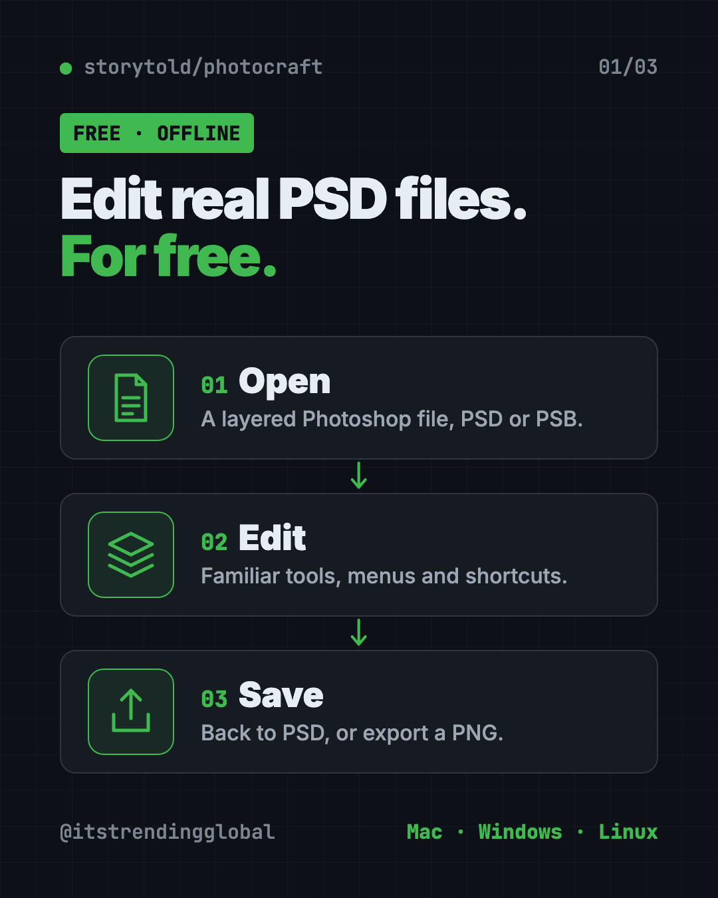
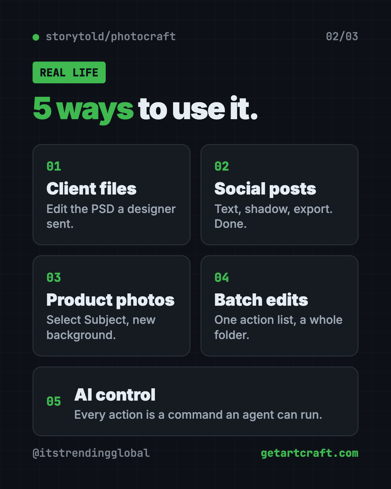
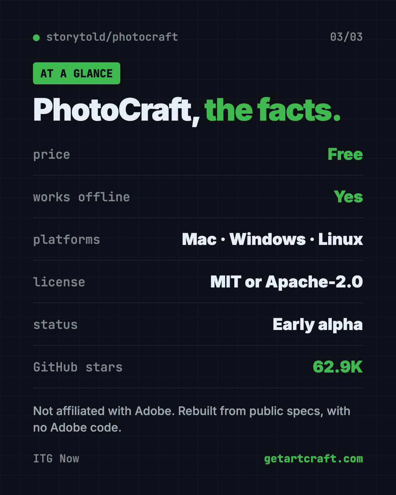

PhotoCraft: Free PSD Editor That Works Like Photoshop (2026)
PhotoCraft is a free PSD editor that works like Photoshop. It opens and saves real layered PSD files and runs offline on Mac, Windows and Linux.
PhotoCraft is a free PSD editor that looks and works like Photoshop, and it opens and saves real layered PSD files. It runs offline on Mac, Windows and Linux, with no account and no monthly bill.
This guide explains what it does, real ways to use it, how to install it, and what it still can't do. The makers are upfront about that part.
Key takeaways
- Free and open source, under your choice of the MIT or Apache-2.0 license.
- Real PSD files. Open, edit and save layered Photoshop documents.
- Familiar by design. Menus, panels and shortcuts sit where Photoshop users expect them.
- Runs on your computer. Smart selection works with "no cloud and no account."
- Still early. The makers call it "early alpha" and say it's not yet a full Photoshop replacement for pro work.
What is PhotoCraft?
PhotoCraft is an image editor made by the ArtCraft team. Its README calls it a "clean-room reimplementation of Adobe Photoshop." Clean-room means they rebuilt it from public specs and observed behavior only, with no Adobe code.
It's written in a fast programming language called Rust and draws the picture with your graphics card. The README promises "no Electron, no web view, no waiting," which means it's a true desktop app, not a website in a window.
It's not linked to Adobe in any way. It simply works with the same kinds of files.
The project has about 62.9K stars on GitHub. Stars are like bookmarks, so a huge number of people are following it.

Can PhotoCraft really open PSD files?
Yes. This is its big selling point. PhotoCraft's PSD support was written from Adobe's public file specification and tested on real files.
The makers report that opening and re-saving a file renders the same for 307 of the 309 files in a public PSD test set. Anything it doesn't fully understand yet is carried over, not thrown away.
It also opens large PSB files, 16 and 32-bit files, and CMYK and Lab documents. CMYK is the color mode print shops use.
💡 Tip: Keep a copy of the original PSD before you save over it. The README notes a re-saved file looks the same but isn't byte-for-byte identical.
What can PhotoCraft do?
The feature list is huge. Here's what most people will notice:
- 67 tools, from marquees and lassos to healing brushes, clone stamp and pen tools.
- 16 adjustment layers, like Curves, Levels, Vibrance and Hue/Saturation. They never change your original pixels.
- Layer styles like drop shadow, glow, bevel and stroke, live on any layer, including text.
- Smart selections. Quick Selection, Object Selection and Select Subject trace things for you, right on your computer.
- Editable text that keeps its styles and saves back into PSD.
- Lots of filters, with live previews on the canvas.
- Full history, so every step can be undone, even one brush stroke at a time.
- Export As with a preview and an instant file-size estimate.
How to use PhotoCraft (real examples)
- Edit a designer's file. A freelancer sends a layered PSD. Change the headline and swap the photo, then save it back as PSD.
- Make social graphics. Add a photo, a text layer with a drop shadow, and export a PNG in one click.
- Fix product photos. Use Select Subject to cut out the item, then put it on a clean background.
- Color-correct a batch. The command-line tool can apply one set of actions to a whole folder of images.
- Let AI do the clicks. Every action is a command, so an AI agent can drive PhotoCraft too.

Is PhotoCraft free?
Yes. PhotoCraft is free and open source. You can pick either the MIT or Apache-2.0 license, both of which let you use, change and share it.
The README doesn't mention any paid plan. The ArtCraft name and logos are trademarks, so changed copies must remove them.
PhotoCraft at a glance
| Price | Free |
| Works offline | Yes |
| Platforms | Mac, Windows, Linux (plus FreeBSD and a web version) |
| License | MIT or Apache-2.0 (your choice) |
| Opens and saves | Real layered PSD files, plus PSB |
| Latest version | 0.9.0 (October 14, 2026) |
| Status | Early alpha |
| Best for | People who need to open and edit PSD files without paying for Photoshop |
How to install PhotoCraft on Mac, Windows and Linux
The README says the easiest way is to download it from the PhotoCraft page on getartcraft.com. You can also use the project's GitHub Releases page.
- Go to getartcraft.com/apps/photocraft, or the latest release on GitHub.
- Pick your file.
- Mac: the
.dmgfile. It works on both Apple silicon and Intel Macs. - Windows: the
.msiinstaller, or a portable.zipyou can run without installing. - Linux: an AppImage,
.deb,.rpm, Flatpak or tarball. - Install and open it like any other app.
The Mac and Windows files are signed, so your computer can check they're safe.
Linux Flatpak option
If you picked the Flatpak file on Linux, copy and paste this (swap in the version you downloaded):
flatpak install --user photocraft-<version>-linux-x86_64.flatpak
flatpak run ai.storyteller.photocraft
⚠️ Heads up: On Linux with Wayland, dragging files onto the window doesn't work yet. Use File, then Open, or copy and paste the image instead.
Let Claude or Codex set it up for you
Claude Code and OpenAI Codex are AI helpers that can run setup steps on your computer. You paste a request, it does the steps, and you approve each one.
Copy and paste this:
Please help me install PhotoCraft, the free PSD editor.
1. Check if I'm on Mac, Windows or Linux, and which chip I have.
2. Open https://github.com/storytold/photocraft/releases/latest and pick the right installer for me.
3. Download and install it, and explain each step in plain words before you run it.
4. Open PhotoCraft when you're done.
Then try asking:
Use photocraft-cli to sharpen every photo in my "raw" folder and save them to "done".
Explain which PhotoCraft shortcuts match the Photoshop ones I already know.
Read PhotoCraft's parity checklist and tell me if it can handle my kind of work.
What are PhotoCraft's limits?
The makers are refreshingly honest here. The README says it is in "early alpha" and "not yet a Photoshop replacement for daily professional work."
The biggest gaps they list:
- No AI or generative features yet, like Photoshop's generative fill.
- 15 tools still missing.
- Less depth in typography and pro workflows.
- No support for Photoshop plug-ins.
⚠️ Heads up: If your job depends on Photoshop every day, test PhotoCraft on a copy of your real files before you switch.

Our take
PhotoCraft is the most serious free PSD editor we've covered. Opening and saving real layered files is the thing most free editors get wrong, and this one takes it seriously.
What we like:
- Real PSD open and save, with test results to back it up.
- Runs on Mac, Windows and Linux, offline.
- Familiar menus and shortcuts for Photoshop users.
- Built so AI agents and scripts can drive it.
- Honest about what isn't done yet.
What to watch for:
- It's early alpha, so expect bugs and missing pieces.
- No generative AI fill or Photoshop plug-ins.
- Not ready to fully replace Photoshop for pro work.
On a Mac and want something more settled? Read our Compositor guide. Working with Figma files instead? See OpenPencil. PhotoCraft also made our top 5 repos of October 2026.
FAQ
Is PhotoCraft a free PSD editor?
Yes. PhotoCraft is free and open source. It opens, edits and saves real layered PSD files.
Is PhotoCraft made by Adobe?
No. It's made by the ArtCraft team and isn't linked to Adobe. It was rebuilt from public specs with no Adobe code.
Does PhotoCraft work on Windows and Linux?
Yes. There are downloads for Mac, Windows and Linux, plus FreeBSD and a web version.
Can PhotoCraft replace Photoshop?
Not fully yet. The makers say it's in early alpha and not yet a replacement for daily professional work.
Does PhotoCraft need the internet?
No. It runs on your computer. Smart selection works with no cloud and no account.
Get PhotoCraft: github.com/storytold/photocraft
Follow @gittrendingglobal on Instagram for one free, useful tool every day.
Keep reading

PureMac: Free CleanMyMac Alternative, No Subscription
PureMac is a free CleanMyMac alternative. It clears junk, fully uninstalls apps and finds duplicates, with no subscription, no tracking and no scare tactics.

Recordly: Free Screen Recorder With Auto-Zoom (2026)
Recordly is a free screen recorder and editor for Mac, Windows and Linux. It adds auto-zooms, a smooth cursor, webcam bubbles and styled backgrounds.

OpenSEO: Free Semrush Alternative, Open Source (2026)
OpenSEO is a free Semrush alternative for keyword research, rank tracking and site audits. It's open source, and you pay only for the search data you use.